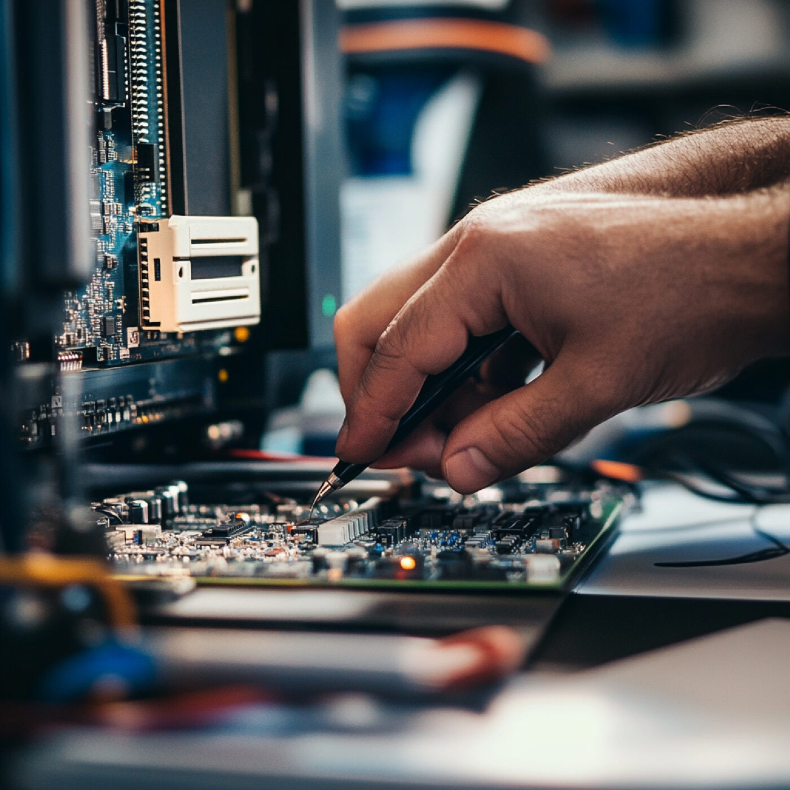

Dépannage et réparation informatique à domicile à Mettet
Mettet est voisine de Florennes, où Mick Computer est installé. Nous venons à domicile pour réparer votre ordinateur, sans jargon et sans surprise sur la facture.

Votre informaticien de proximité à Mettet
Quand l'ordinateur ne suit plus, on n'a pas envie de le démonter, de le transporter et d'attendre. Nous intervenons chez vous, à Mettet ou dans ses villages, et dans la plupart des cas le problème est réglé sur place.
Ce que nous réparons au quotidien
- Ordinateur qui ne démarre plus, écran noir, redémarrages en boucle (réparation PC & Mac)
- Lenteurs et blocages : nettoyage, optimisation, passage en SSD (PC lent)
- Virus et publicités envahissantes, sécurisation de vos accès (suppression de virus)
- Écran cassé, clavier ou batterie sur ordinateur portable (réparation d'écran)
- Photos, documents ou comptabilité perdus après une panne de disque (récupération de données)
- Box, Wi-Fi, imprimante ou nouvel ordinateur à installer (installation et configuration)
Vieux PC : on répare avant de vous faire racheter
Un ordinateur de quelques années peut souvent repartir pour longtemps avec un SSD et un bon nettoyage. Nous vous le disons honnêtement après diagnostic. Lire aussi : réparer ou racheter son PC ?
Villages et sections desservis autour de Mettet
Nous nous rendons à Mettet même ainsi que dans ses villages : Biesme, Biesmerée, Ermeton-sur-Biert, Furnaux, Graux, Oret, Saint-Gérard et Stave. Nous couvrons aussi Florennes, Namur, Dinant, Charleroi et toute la Wallonie.
Un tarif clair, annoncé à l'avance
Nous travaillons au taux horaire, à partir de 30€/h HTVA, soit 36,30€/h TVAC (hors déplacement) : vous ne payez que le temps réellement passé. Après le diagnostic, vous savez où vous allez, et vous décidez. Nous travaillons sur rendez-vous, du lundi au vendredi de 9h à 19h30.
Un souci informatique à Mettet ?
Décrivez votre souci, on vous rappelle avec une solution claire et une estimation du temps nécessaire.